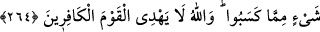

264. Ey iman edenler! Allah’a ve ahiret gününe inanmadığı halde malını gösteriş
için harcayan kimse gibi, başa kakmak ve incitmek suretiyle, yaptığınız
hayırlarınızı boşa çıkarmayın. Böylesinin durumu, üzerinde biraz toprak bulunan
düz kayaya benzer ki, sağanak bir yağmur isabet etmiş de onu çıplak pürüzsüz
kaya haline getirivermiştir. Bunlar kazandıklarından hiçbir şeye sahip olamazlar.
Allah, kâfirleri doğru yola iletmez.
Kim sadaka verdiğine eziyet eder; başa kakarsa verdiği sadakadan hiçbir ecir
alamadığı gibi, fakîre eziyetten ötürü günah kazanmış olur. Menn ve ezânın mânâları
daha önce geçmişti. Sadakanın iptâlinden maksad ecir ve sevâbının yok olmasıdır.
Sadaka, eziyet ve başa kakma ile iptâl olur ve sevap elde edilmez.
Siz sadakalarınızı, münâfıkların sadakalarını iptâl ettikleri gibi iptâl etmeyin. Münâfık
malını insanlar görsün ve: “Ne cömert insan!” desinler diye infâk eder. Halbuki Allah’a
ve âhırete inanmaz. Yaptığı infâk ile Allah’ın rızâsını ve âhıret sevâbını istemez.
“Riyâ”, mufâale babından masdardır ve müşâreket mânâsı vardır. “Mürâî”; yani
riyakâr kimse, infâk ederken insanların kendisini görmelerini ve övmelerini ister. Böyle
birinin hayrete şâyân durumu, üzerinde az bir toprak bulunan pürüzsüz saf bir taşa
benzer. Bu taşa, damlaları büyük, sert bir yağmur düşerse, üzerinde tozdan topraktan bir
eser bırakmaz. Onu sert bir kaya haline getirir.
O takdirde şöyle bir soru akla gelebilir: “Peki durum böyle olunca bu gibi kimselerin
halleri nasıl olur?” Cevap olarak denir ki: “Bunlar kazandıklarından hiçbir şeye mâlik
olamazlar. Riyâ olsun diye işlediklerinden hiçbir menfaat göremezler ve asla bir sevâp
elde etmezler. Nitekim Allah Teâlâ bu konuda: “(Onların yaptıklarını) saçılmış
zerreler haline getiririz” (el-Vâkıa, 65/6) buyurmaktadır.
Allah Teâlâ, eziyet etmek ve başa kakmak sûretiyle sadakanın iptâl olduğunu
belirttikten sonra bunu açıklamak üzere iki örnek vermektedir:
1. Allah’ı ve âhıreti inkâr ettiği halde, sırf gösteriş olsun diye malını dağıtan kimse.
Böylesi kâfirin yaptığı infâkın boşa çıkması, eziyet ve başa kakmak suretiyle sadaka
veren kimsenin ecrinin boşa çıkmasından daha açık ve nettir.
2. Üzerinde belli bir miktar toprak bulunan ve yağmur değince çıplak kalan bir kaya.
Kâfir taşa, taş üzerindeki toprak kâfirin yaptığı infâka benzetilmiştir. Kâfirin amelini
yok eden küfür, infâk edenin amelini boşa çıkaran menn ve eza taşa yağıp üzerindeki
toprağı silen yağmura teşbih edilmiştir. Yağmurun, taşın üzerindeki toprağı silip
götürmesi gibi menn ve eza da yapılan infâkın sevabını o şekilde yok eder. Bu açıktır.